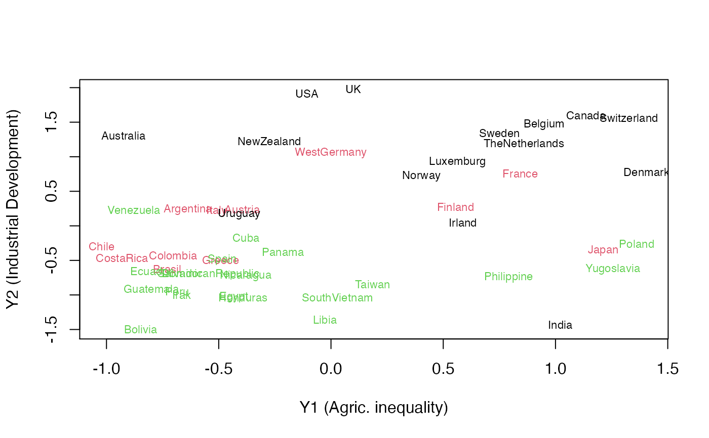
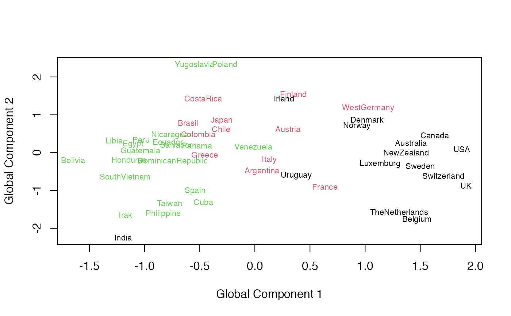

Regularized Generalized Canonical Correlation Analysis (RGCCA)
rgcca.RdRegularized Generalized Canonical Correlation Analysis (RGCCA) is a generalization of regularized canonical correlation analysis to three or more sets of variables. Given \(J\) matrices \(X_1, X_2, ..., X_J\) that represent \(J\) sets of variables observed on the same set of \(n\) individuals. The matrices \(X_1, X_2, ..., X_J\) must have the same number of rows, but may (and usually will) have different numbers of columns. The aim of RGCCA is to study the relationships between these \(J\) blocks of variables. It constitutes a general framework for many multi-block data analysis methods. It combines the power of multi-block data analysis methods (maximization of well identified criteria) and the flexibility of PLS path modeling (the researcher decides which blocks are connected and which are not). Hence, the use of RGCCA requires the construction (user specified) of a design matrix \(C\), that characterize the connections between blocks. Elements of the symmetric design matrix \(C = (c_{jk})\) is equal to 1 if block \(j\) and block \(k\) are connected, and 0 otherwise. The function rgcca() implements a monotonically convergent algorithm (i.e. the bounded criteria to be maximized increases at each step of the iterative procedure) that is very similar to the PLS algorithm proposed by Herman Wold and finds at convergence a stationnary point of the RGCCA optimization problem. . Moreover, depending on the dimensionality of each block \(X_j\), \(j = 1, ..., J\), the primal (when \(n > p_j\)) algorithm or the dual (when \(n < p_j\)) algorithm is used (see Tenenhaus et al. 2015). Moreover, by deflation strategy, rgcca() allow to compute several RGCCA block components (specified by ncomp) for each block. Within each block, block components are guaranteed to be orthogonal using the deflation procedure. The so-called symmetric deflation is considered in this implementation, i.e. each block is deflated with respect to its own component(s). It should be noted that the numbers of components per block can differ from one block to another.
rgcca(A, C = 1 - diag(length(A)), tau = rep(1, length(A)), ncomp = rep(1, length(A)), scheme = "centroid", scale = TRUE, init = "svd", bias = TRUE, tol = 1e-08, verbose = TRUE)
Arguments
| A | A list that contains the \(J\) blocks of variables \(X_1, X_2, ..., X_J\). |
|---|---|
| C | A design matrix that describes the relationships between blocks (default: complete design). |
| tau | tau is either a \(1 * J\) vector or a \(max(ncomp) * J\) matrix, and contains the values of the shrinkage parameters (default: tau = 1, for each block and each dimension). If tau = "optimal" the shrinkage paramaters are estimated for each block and each dimension using the Schafer and Strimmer (2005) analytical formula . If tau is a \(1* J\) numeric vector, tau[j] is identical across the dimensions of block \(X_j\). If tau is a matrix, tau[k, j] is associated with \(X_{jk}\) (\(k\)th residual matrix for block \(j\)) |
| ncomp | A \(1 * J\) vector that contains the numbers of components for each block (default: rep(1, length(A)), which gives one component per block.) |
| scheme | The value is "horst", "factorial", "centroid" or any diffentiable convex scheme function g designed by the user (default: "centroid"). |
| scale | If scale = TRUE, each block is standardized to zero means and unit variances and then divided by the square root of its number of variables (default: TRUE). |
| init | The mode of initialization to use in RGCCA algorithm. The alternatives are either by Singular Value Decompostion ("svd") or random ("random") (Default: "svd"). |
| bias | A logical value for biaised or unbiaised estimator of the var/cov (default: bias = TRUE). |
| tol | The stopping value for convergence. |
| verbose | If verbose = TRUE, the progress will be report while computing (default: TRUE). |
Value
A list of \(J\) elements. Each element of \(Y\) is a matrix that contains the RGCCA components for the corresponding block.
A list of \(J\) elements. Each element of \(a\) is a matrix that contains the outer weight vectors for each block.
A list of \(J\) elements. Each element of astar is a matrix defined as Y[[j]][, h] = A[[j]]%*%astar[[j]][, h].
A design matrix that describes the relation between blocks (user specified).
A vector or matrix that contains the values of the shrinkage parameters applied to each block and each dimension (user specified).
The scheme chosen by the user (user specified).
A \(1 * J\) vector that contains the numbers of components for each block (user specified).
A vector that contains the values of the criteria across iterations.
A \(1 * J\) vector that contains the formulation ("primal" or "dual") applied to each of the \(J\) blocks within the RGCCA alogrithm
indicators of model quality based on the Average Variance Explained (AVE): AVE(for one block), AVE(outer model), AVE(inner model).
References
Tenenhaus M., Tenenhaus A. and Groenen PJF (2017), Regularized generalized canonical correlation analysis: A framework for sequential multiblock component methods, Psychometrika, in press
Tenenhaus A., Philippe C., & Frouin V. (2015). Kernel Generalized Canonical Correlation Analysis. Computational Statistics and Data Analysis, 90, 114-131.
Tenenhaus A. and Tenenhaus M., (2011), Regularized Generalized Canonical Correlation Analysis, Psychometrika, Vol. 76, Nr 2, pp 257-284.
Schafer J. and Strimmer K., (2005), A shrinkage approach to large-scale covariance matrix estimation and implications for functional genomics. Statist. Appl. Genet. Mol. Biol. 4:32.
Examples
############# # Example 1 # ############# data(Russett) X_agric =as.matrix(Russett[,c("gini","farm","rent")]) X_ind = as.matrix(Russett[,c("gnpr","labo")]) X_polit = as.matrix(Russett[ , c("demostab", "dictator")]) A = list(X_agric, X_ind, X_polit) #Define the design matrix (output = C) C = matrix(c(0, 0, 1, 0, 0, 1, 1, 1, 0), 3, 3) result.rgcca = rgcca(A, C, tau = c(1, 1, 1), scheme = "factorial", scale = TRUE)#>#>#>#>#>#>lab = as.vector(apply(Russett[, 9:11], 1, which.max)) plot(result.rgcca$Y[[1]], result.rgcca$Y[[2]], col = "white", xlab = "Y1 (Agric. inequality)", ylab = "Y2 (Industrial Development)")############# # Example 2 # ############# data(Russett) X_agric =as.matrix(Russett[,c("gini","farm","rent")]) X_ind = as.matrix(Russett[,c("gnpr","labo")]) X_polit = as.matrix(Russett[ , c("inst", "ecks", "death", "demostab", "dictator")]) A = list(X_agric, X_ind, X_polit, cbind(X_agric, X_ind, X_polit)) #Define the design matrix (output = C) C = matrix(c(0, 0, 0, 1, 0, 0, 0, 1, 0, 0, 0, 1, 1, 1, 1, 0), 4, 4) result.rgcca = rgcca(A, C, tau = c(1, 1, 1, 0), ncomp = rep(2, 4), scheme = function(x) x^4, scale = TRUE) # HPCA#>#>#>#>#>#>#>#>#>#>#>#>#>#>#>#>#>#>#>#>lab = as.vector(apply(Russett[, 9:11], 1, which.max)) plot(result.rgcca$Y[[4]][, 1], result.rgcca$Y[[4]][, 2], col = "white", xlab = "Global Component 1", ylab = "Global Component 2")if (FALSE) { ###################################### # example 3: RGCCA and leave one out # ###################################### Ytest = matrix(0, 47, 3) X_agric =as.matrix(Russett[,c("gini","farm","rent")]) X_ind = as.matrix(Russett[,c("gnpr","labo")]) X_polit = as.matrix(Russett[ , c("demostab", "dictator")]) A = list(X_agric, X_ind, X_polit) #Define the design matrix (output = C) C = matrix(c(0, 0, 1, 0, 0, 1, 1, 1, 0), 3, 3) result.rgcca = rgcca(A, C, tau = rep(1, 3), ncomp = rep(1, 3), scheme = "factorial", verbose = TRUE) for (i in 1:nrow(Russett)){ B = lapply(A, function(x) x[-i, ]) B = lapply(B, scale2) resB = rgcca(B, C, tau = rep(1, 3), scheme = "factorial", scale = FALSE, verbose = FALSE) # look for potential conflicting sign among components within the loo loop. for (k in 1:length(B)){ if (cor(result.rgcca$a[[k]], resB$a[[k]]) >= 0) resB$a[[k]] = resB$a[[k]] else resB$a[[k]] = -resB$a[[k]] } Btest =lapply(A, function(x) x[i, ]) Btest[[1]]=(Btest[[1]]-attr(B[[1]],"scaled:center")) / (attr(B[[1]],"scaled:scale"))/sqrt(NCOL(B[[1]])) Btest[[2]]=(Btest[[2]]-attr(B[[2]],"scaled:center")) / (attr(B[[2]],"scaled:scale"))/sqrt(NCOL(B[[2]])) Btest[[3]]=(Btest[[3]]-attr(B[[3]],"scaled:center")) / (attr(B[[3]],"scaled:scale"))/sqrt(NCOL(B[[3]])) Ytest[i, 1] = Btest[[1]]%*%resB$a[[1]] Ytest[i, 2] = Btest[[2]]%*%resB$a[[2]] Ytest[i, 3] = Btest[[3]]%*%resB$a[[3]] } lab = apply(Russett[, 9:11], 1, which.max) plot(result.rgcca$Y[[1]], result.rgcca$Y[[2]], col = "white", xlab = "Y1 (Agric. inequality)", ylab = "Y2 (Ind. Development)") text(result.rgcca$Y[[1]], result.rgcca$Y[[2]], rownames(Russett), col = lab, cex = .7) text(Ytest[, 1], Ytest[, 2], substr(rownames(Russett), 1, 1), col = lab, cex = .7) }